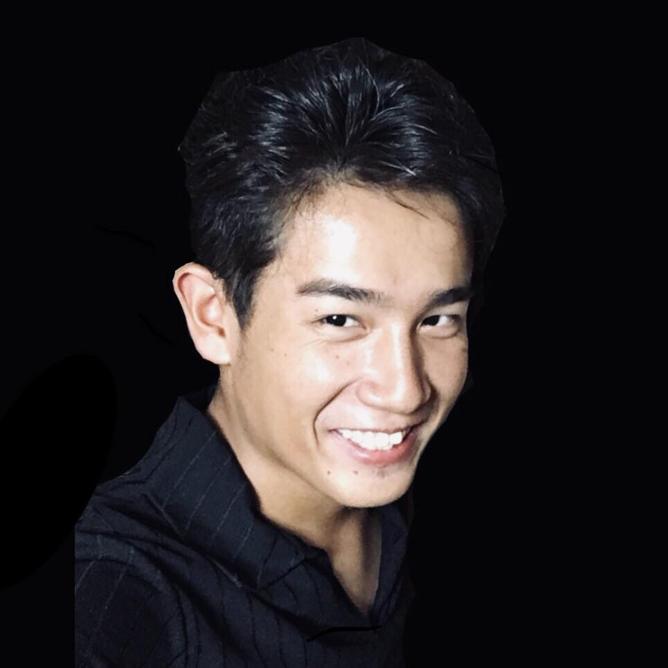

Aichi, Japão · disponível para contrato remoto
A maior parte dos projetos que vi travar não travou no código. Travou entre a sala onde se decide e a sala onde se constrói. Eu trabalho nas duas. Anaplan certificado, arquitetura .NET/Azure, dez anos dentro de empresa japonesa.
Números de sistemas que existem e rodam. Nenhum deles é protótipo.
"Depoimento do dono do Toumorokoshi House entra aqui — em vídeo ou texto."Espaço reservado · a gravar
Model Builder certificado. Construí o modelo que decide quantas pessoas vão para cada linha numa montadora, e o que prevê demanda e estoque num fabricante de equipamentos médicos. Do primeiro levantamento até a manutenção.
DDD em quatro camadas sobre App Service, Azure SQL e SignalR, com TDD em xUnit. Sistema de alocação de posições de aeronaves para grande companhia aérea japonesa.
Conduzo levantamento direto com o cliente japonês, em japonês, e entrego com time internacional. A maior parte dos projetos que vi falhar falhou nessa junção, não no código.
Dois SaaS verticais, escritos do zero, para quem o mercado japonês esqueceu.
A igreja registra membro, oferta e ata no dia a dia. E o dossiê para virar 宗教法人 vai se montando sozinho — sem preencher nada duas vezes.
O pedido sai da mesa por QR e chega na cozinha, no caixa e na contabilidade sem ninguém digitar de novo. O mês fecha sozinho, no padrão japonês.
Uso cookies apenas para entender como o site é usado. Nada de anúncios.